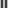

Преобразование Фурье — инструмент, который используется в самых разных областях. Перед вами объяснение того, как он работает и где может быть полезен. А ещё — того, как с помощью него можно делать красивые вещи, например вот это:
Я объясню, как работает эта анимация и преобразование Фурье.
После прочтения вы узнаете:
- какие функции у преобразования Фурье;
- где на практике применяется преобразование Фурье;
- несколько бесполезных, но крутых способов применения преобразования Фурье.
Пока что мы оставим математику и формулы за скобками. За всем этим стоит интересная математика, но лучше начать с того, что конкретно делает это преобразование и почему вам стоит его использовать. Если вы хотите узнать больше о том, как это работает, ниже вы найдёте материалы для дальнейшего чтения.
Так что же это такое?
Простыми словами, преобразование Фурье — это способ разделения чего-либо на кучу синусоид. Как обычно, название происходит от некоего давным-давно жившего человека, которого звали Фурье.
Давайте начнём с простых примеров и будем потихоньку продвигаться вперёд. Для начала мы посмотрим на волны — колебания, которые повторяются во времени.
Вот один из примеров волны:
Этот волнообразный паттерн можно разделить на синусоиды. Таким образом, когда мы сложим две синусоиды, мы получим исходную волну.
С помощью преобразования Фурье мы можем взять исходную волну и получить все входящие в неё синусоиды. В этом примере вы можете даже визуализировать это в своей голове, просто взглянув на волну.
Зачем? Оказывается, что очень многие вещи в окружающем нас мире работают на синусоидальных волнах. Обычно мы называем их частотами.
Самый простой пример это звук — когда мы воспринимаем его, мы не слышим сложную изогнутую волну, а разные частоты синусоид, которые вместе составляют звук.
Имея возможность разделить их на компьютере, мы можем понять, что на самом деле слышит человек, насколько звук низкий или высокий, или какая это нота.
Ещё мы можем использовать этот метод и на тех волнах, которые не выглядят так, будто состоят из синусоид.
Давайте посмотрим на эту штуку. Она называется меандр.
Это не сразу заметно, но она тоже может быть разделена на синусоиды.
На этот раз нам понадобится очень много синусоид — технически, бесконечное количество, — чтобы идеально представить её. Чем больше мы добавляем синусоид, тем больше этот паттерн становится похож на меандр, с которого мы начали.
Перемещайте ползунок, чтобы изменить количество синусоид
Визуально вы заметите, что только первые две синусоиды делают наибольший вклад в формирование исходной волны. Когда ползунок посередине, волна приобретает нужные очертания, но всё ещё остается немного зубчатой. Нам необходимо добавить оставшиеся маленькие синусоиды, чтобы сгладить углы.
Если вы прослушаете эту волну, то услышите, что звук становится ниже, потому что мы убираем верхние частоты.
Это работает для любого паттерна линии. Попробуйте нарисовать сами!
Draw here!
Перемещайте ползунок, чтобы увидеть, как по мере увеличения количества синусоид картинка ставится всё более похожей на ваш рисунок
И снова, если не брать во внимание зубчатость, волна становится похожей на рисунок всего с половиной синусоид.
Мы можем обратить этот факт себе на пользу. Используя преобразование Фурье, возьмём только важные части звука и сохраним их, в результате получив что-то очень похожее на оригинал.
Обычно компьютер хранит волны в виде последовательности значений.
Но вместо этого мы можем представить их в виде набора синусоид. После этого нам удастся сжать звуковую дорожку, проигнорировав более маленькие частоты. Конечный результат не будет идентичным, но для человека он будет звучать очень похоже.
Именно это и делает формат MP3, но он с умом выбирает, какие частоты оставить, а какие выбросить.
Таким образом, мы можем использовать преобразование Фурье, чтобы понять фундаментальные свойства волны, а потом использовать эту информацию в других целях, например для сжатия.
Теперь давайте погрузимся глубже в преобразование Фурье. Следующая часть не только классно выглядит, но и позволяет получше разобраться в том, что делает преобразование Фурье. Но в основном классно выглядит.
Эпициклы
В самом начале я сказал, что мы разделяем волны на синусоиды. На самом деле создаются не простые, а 3D-синусоиды. Можно назвать их «сложными синусоидами». Или просто «спиралями».
Если посмотреть сбоку, они выглядят как синусоиды. Однако спереди они выглядят как круги.
До этого момента нам требовались только обычные 2D-синусоиды. Когда мы используем преобразования Фурье на обычных 2D-волнах, сложные части преобразований уходят и остаются простые синусоиды.
Но мы можем использовать 3D-синусоиды, чтобы сотворить что-то повеселее:
Что же здесь происходит?
Мы можем рассматривать этот рисунок как 3D-фигуру, потому что она движется во времени. Если вы представите, как человек рисует эту руку, три измерения будут указывать на то, где находится кончик карандаша в каждый момент времени. Оси X и Y указывают позиции, а третье измерение укажет на момент времени.
Теперь, когда у нас есть 3D-модель, мы не можем использовать обычные 2D-синусоиды. Сколько бы мы их ни добавляли, мы никогда не получим что-либо в 3D. Поэтому нам нужно что-то другое.
Мы можем использовать спиралевидные синусоиды, которые видели ранее. Если возьмем побольше таких синусоид, то получим что-то похожее на наш рисунок.
Помните, что эти волны выглядят как круги, когда мы смотрим на них спереди. Модель, в которой один круг движется вокруг другого, называется эпициклом.
Используйте ползунок, чтобы изменять количество кругов
Как и раньше, мы получим довольно неплохое приближение к нашему рисунку всего с несколькими кругами. Поскольку это довольно простой рисунок, остальные круги делают только одно: добавляют остроты углам.
И это справедливо для любого рисунка! Теперь ваша очередь поиграть с ними.
Рисуйте здесь!
Используйте ползунок, чтобы изменять количество кругов для вашего рисунка
Вы снова можете заметить, что достаточно небольшого числа кругов, чтобы сделать похожий рисунок и не сохранять все его детали.
Можем ли мы использовать это для настоящих данных? Конечно! В реальности существует ещё один формат данных, называемый SVG, — он лучше работает с фигурами, которые мы рисуем. Но пока мы просто делаем прикольные гифки.
Однако есть и другой формат визуальных данных, который использует преобразование Фурье.
JPEGs
А вы знали, что преобразование Фурье может быть использовано и на картинках? На самом деле, мы постоянно это видим, потому что именно так работает формат JPEG. Мы применяем всё те же принципы и к изображениям — разделяем «что-либо» на множество синусоид, а потом оставляем только самые важные.
Когда мы работаем с картинками, нам нужен другой тип синусоид. Нужно что-то, что позволит вывести оригинальное изображение из набора синусоид, каким бы оно ни было.
Для этого каждая наша синусоида тоже будет изображением. Вместо волны в виде линии теперь мы имеем изображения с чёрно-белыми секциями. Чтобы отобразить размер волны, каждая секция будет более или менее контрастной.
Схожим образом мы можем работать и с цветными картинками, но давайте начнем с чёрно-белых. Чтобы отобразить бесцветные изображения, нам нужны изображения с горизонтальными линиями…
…а также с вертикальными линиями.

Но одних изображений с горизонтальными и вертикальными линиями по-отдельности недостаточно. Нам понадобятся дополнительные, которые получаются путём перемножения этих двух.
Вот все изображения, которые нам нужны для картинки 8х8.


Если мы откорректируем контрастность изображений на нужную величину, а затем совместим их, мы сможем создать любую картинку.
Давайте начнём с буквы А. Она довольно маленькая, но именно это нам и нужно, иначе мы получим слишком много других изображений.

По мере добавления новых элементов мы всё ближе подбираемся к настоящему изображению. Я думаю, что вы видите здесь паттерн, ведь мы получаем достаточно хорошее приближение с их малым количеством.


Для настоящих JPEG-картинок нужно добавить всего несколько деталей.
Изображение делится на секции размером 8х8, и каждая секция делится сама по себе. Мы используем набор частот, чтобы определить, насколько светлый или тёмный каждый пиксель, а затем два других набора частот — для цвета: один для красно-зелёного, а другой для сине-жёлтого. Количество частот, которое мы используем для каждой секции, определяет качество JPEG-картинки.
Вот пример настоящего JPEG-изображения, приближенного для того, чтобы мы смогли рассмотреть все детали. Когда мы играем с уровнем качества, видно, как проходит этот процесс.
Заключение
Давайте подведём итоги:
- преобразование Фурье позволяет нам взять что-либо и разделить это на частоты;
- частоты говорят нам о неких фундаментальных свойствах данных, которые мы имеем;
- мы можем сжимать данные, сохраняя только самые важные частоты;
- а ещё мы можем использовать их, чтобы создавать крутые анимации с кучей кружочков.
Всё это лишь поверхностный взгляд с некоторыми сферами применения. Преобразование Фурье — мощнейший инструмент, ведь разделение чего бы то ни было на частоты — это нечто фундаментальное. Оно используется в самых разных областях, включая проектирование схем, сигналы мобильных телефонов, магнитно-резонансные томографы (МРТ) и квантовую физику.
Вопросы для любопытных
Я пропустил бОльшую часть математики, но если вам интересно, как это работает, то вот несколько вопросов, которые вы можете задать в ходе изучения:
- Как математически изобразить преобразование Фурье?
- В чём разница между непрерывным преобразованием и дискретным преобразованием Фурье?
- Как выполнить преобразование Фурье с помощью вычислений?
- Как выполнить преобразование Фурье для целой песни (а не для одной ноты)?
Дополнительные материалы
Предлагаю вам несколько очень хороших ресурсов, которые помогут узнать ещё больше по теме:
An Interactive Guide To The Fourier Transform (Интерактивный гайд по преобразованию Фурье) Отличная статья, которая погружает в математические аспекты происходящего.
But what is the Fourier Transform? A visual introduction. (Что такое преобразование Фурье? Наглядное введение) Отличное видео на YouTube от 3Blue1Brown, так же объясняющее математику преобразований Фурье с точки зрения звука.
A Tale of Math & Art: Creating the Fourier Series Harmonic Circles Visualization (История о математике и искусстве: создание визуализации гармонических окружностей ряда Фурье) Ещё одна статья, объясняющая, как использовать эпициклы для рисования, с точки зрения линейной алгебры.
Преобразование Фурье (Википедия) Конечно же, статья в Википедии тоже довольно хороша.
Автор
Меня зовут Джез! Моя основная работа — это поисковик из Области залива Сан-Франциско, а в свободное время я делаю игры и интерактивные штуки, такие как эта.
Эта страница имеет открытый исходный код, который вы можете найти на GitHub! Если хотите оставить отзыв или задать мне любой вопрос, пишите на fourier [at] jezzamon [dot] com, или отправьте мне твит в Twitter.
Если вы хотите увидеть больше моих работ, зайдите на домашнюю страницу, а чтобы узнать, над чем я собираюсь работать, подпишитесь на меня в Twitter — @jezzamonn!
Перевод
Перевод на русский язык — Дмитрий Берестовой (GitHub).